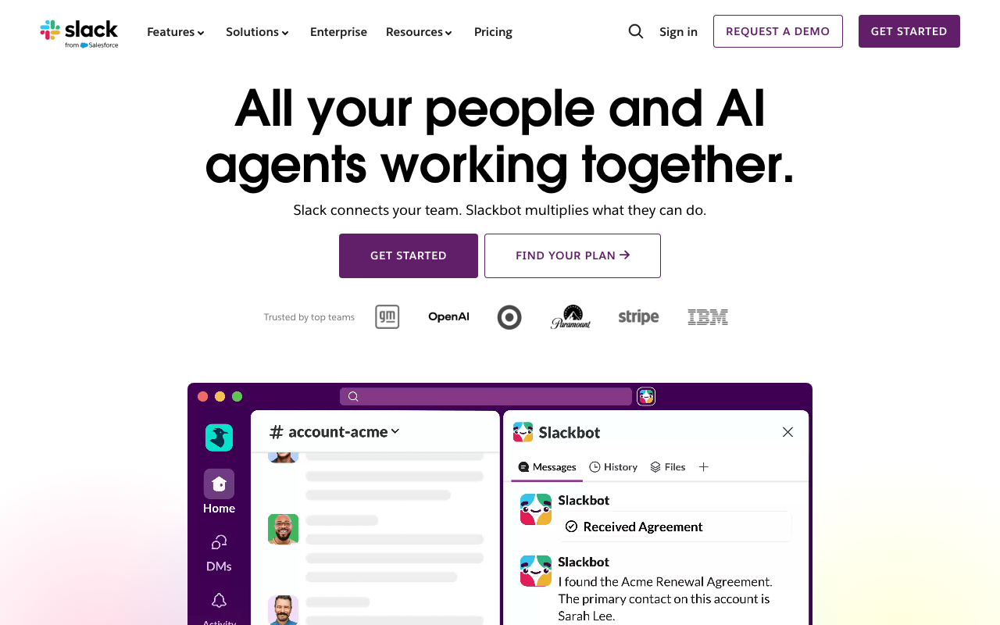

따뜻한 aubergine 위 생산성 컬러 4종의 규율
Slack · https://slack.com · Fetched 2026-04-20

Slack의 마케팅 사이트는 'Work made simple'이라는 카피처럼, 진지함과 친근함을 동시에 주는 **warm purple** 톤을 중심축으로 움직인다. 헤더 글자와 CTA의 anchor가 모두 `#4A154B` — 단순한 브랜드 컬러가 아니라, Slack이 2019년 리브랜딩에서 선택한 'aubergine(가지색)'이다. 이 컬러는 충분히 어둡고 따뜻해서 대비 대신 여운을 만든다.
색상 시스템은 **4가지 시그니처 컬러** — aubergine `#4A154B`, cerulean `#36C5F0`, horchata `#611F69`, Salesforce blue `#1264A3` — 를 축으로 하되, 넓은 면적은 모두 `#FFFFFF` 또는 warm neutral이 맡는다. 채도 높은 시그니처 컬러는 CTA · 링크 · 키 일러스트레이션에만 국한하고, body text는 warm dark `#1D1C1D` (true black 아님)으로 처리한다. light 테마가 default지만 article 페이지는 `--article-theme-primary: #4A154B`로 aubergine를 크게 사용한다.
타이포그래피는 Slack 전용 커스텀 폰트인 **Slack-Lato**(Lato 기반 브랜드 튜닝)를 축으로 하며, 한/중/일 지역용으로 Noto Sans KR/JP/SC/TC를 병행 로드한다. heading은 `MXiangHeHeiSCProBold`(아시아권 진한 헤드 폰트) 스택을 포함시켜 CJK에서도 weight 계단이 무너지지 않게 한다. 본문은 standard 16px/400, 헤드라인은 48~72px까지 크게 가며 `line-height`를 1.1~1.2로 타이트하게 조여 'impact'를 만든다.
레이아웃은 Salesforce-SLDS 기반 grid + Slack 자체 BEM 네임스페이스(`_arrow-link-default`, `.o-section--feature`, `.v--light-text` variant)로 구성되어 있다. section padding은 대형(96px+)과 표준(64px) 두 단계로 나뉘고, hero는 1-column centered로 headline + dual CTA 패턴을 고수한다. `.v--light-text` 같은 variant 모디파이어가 dark background 섹션을 토글한다.
인터랙션은 안정 지향적이다. 화살표 링크가 `::before`로 animated underline을 그리는 시그니처 패턴(`_arrow-link-default:before { border-bottom:2px solid #1264a3 }`)을 쓰고, 버튼 hover는 배경 darken 한 tier. 복잡한 motion은 거의 없다 — Salesforce 엔터프라이즈 브랜드 가드레일 때문.
01. 한눈에 보기 (Quick Start)
5분 안에 Slack처럼 만들기 — 3가지만 하면 80%.
/* 1. 폰트 스택 */
body {
font-family: "Slack-Lato", "Noto Sans KR", "Noto Sans JP",
-apple-system, BlinkMacSystemFont, "Segoe UI", sans-serif;
font-weight: 400;
font-size: 16px;
color: #1D1C1D; /* warm dark — true black 아님 */
}/* 2. 시그니처 4색 토큰 */
:root {
--aubergine: #4A154B;
--cerulean: #36C5F0;
--horchata: #611F69;
--sf-blue: #1264A3;
--bg: #FFFFFF;
--fg: #1D1C1D;
}/* 3. 시그니처 화살표 링크 */
._arrow-link-default {
color: #1264A3;
padding-bottom: 4px;
border-bottom: none;
}
._arrow-link-default::before {
content: "→";
margin-right: 8px;
border-bottom: 2px solid #1264A3;
}02. 출처와 수집 기준
| Source URL | `https://slack.com` |
|---|---|
| Fetched | 2026-04-20 |
| Extractor | curl + Chrome UA (Tier 1 성공) |
| HTML size | 229,228 bytes |
| CSS files | 9개 외부, 총 860KB (일부 SLDS 포함) |
| Token prefix | BEM (`_arrow-link-*`, `.o-section--*`, `.v--*`) |
| Method | CSS custom properties + selector-role 추출 |
03. 테크 스택
- Framework: Salesforce Stack (Slack은 2021년부터 Salesforce)
- Design system: Salesforce SLDS 확장 + Slack 자체 BEM
- CSS architecture: BEM block-element-modifier + variant class (`.v--light-text`)
- Class naming: `_arrow-link-default`, `.o-section--feature__link`, `.v--reverse`
- Default theme: light
- Font loading: 셀프 호스트 Slack-Lato + Noto Sans CJK
- Canonical anchor: `#4A154B` — `--article-theme-primary`
- i18n: CJK 폰트 병행 (JP/KR/SC/TC)
04. 타이포그래피
Slack-Lato 400/700 이원화. 본문 16px 400, headline 48-72px 700 — 중간 weight 없음. CJK는 Noto Sans weight 4-7 병행.
Font Stack
- Display/Body: `Slack-Lato` (Lato 기반 브랜드 튜닝 · 유료/자체 호스팅)
- Asian display: `MXiangHeHeiSCProBold` (CJK heading)
- i18n body: `Noto Sans KR` / `Noto Sans JP` / `Noto Sans SC` / `Noto Sans TC`
- Fallback: system-ui · -apple-system · BlinkMacSystemFont · Segoe UI · Roboto · Helvetica Neue · Arial
- Weights: 400 / 700 (Lato base)
Type Scale
05. 컬러
Aubergine-axis 4-signature + warm neutral + accent pair. Light 테마가 default, article은 aubergine-heavy.
Dominant Usage
06. 스페이싱
SLDS spacing system (0.25rem 기반 scale). 섹션 padding 64/96px 2단.
07. 라디우스
SLDS 4/6/8/16px 소극적 radius + pill(9999). Slack은 radius로 성격 내지 않음.
07. 섀도우
08. 모션
| Pattern | Value | Use |
|---|---|---|
| hover transition | 0.2s ease | button / link |
| arrow underline | 0.2s ease-out | _arrow-link ::before |
| focus ring | 0s 즉시 | outline appear |
09. 레이아웃 패턴
Grid
- Max-width: 1280px (content) / 1440px (hero)
- Grid: SLDS 12-column + Flexbox mix
- Gutter: 24px
- Column count: 2 (content+image) / 3 (feature cards) / 4 (app grid)
Hero
- Layout: 1-column centered text + dual CTA + product hero image below
- Background: solid white 또는 `.v--aubergine` dark
- H1: 48-72px / weight 700 / tracking -0.02em
- CTA: primary (filled aubergine) + secondary (outline)
Section Rhythm
- Padding: 96px (hero/feature) / 64px (standard)
- Inner max-width: 1280px
- Variant: `.v--light-text` dark section toggle
Card
- Padding: 24-32px
- Radius: 8-16px
- Border: 1px solid #DDDDDD or none
- Hover: shadow-md + translate-y -2px
Navigation
- Type: horizontal, desktop-first
- Height: 72px (fixed top)
- Bg: #FFFFFF with 1px border-bottom
- Mobile: hamburger + full-screen overlay
09-R. 반응형 브레이크포인트
| Name | Value | Description |
|---|---|---|
sm | 640px | mobile stacked |
md | 768px | tablet 2-col |
lg | 1024px | desktop |
xl | 1280px | large desktop (max-width cap) |
10. 컴포넌트
Arrow Link
Slack 시그니처 CTA — 화살표 + underline animation
._arrow-link-default { color:#1264A3; }
._arrow-link-default::before { content:"→"; border-bottom:2px solid #1264A3; }Primary Button
CTA 주요 액션
.btn-primary { background:#4A154B; color:#FFF; padding:12px 24px; border-radius:4px; font-weight:700; }Section Dark Variant
`.v--light-text` modifier로 dark section 토글
.o-section.v--light-text { background:#4A154B; color:#FFFFFF; }
.o-section.v--light-text a { color:#36C5F0; }Hero Headline
72px impact
.hero h1 { font-size:72px; font-weight:700; line-height:1.05; letter-spacing:-0.02em; }11. Agent Prompt Guide
복사 가능한 프롬프트 템플릿 — 토큰/폰트/색이 실제 CSS 값.
Quick Color Reference
| Role | Token | Hex |
|---|---|---|
| Brand primary | --color-aubergine | #4A154B |
| Accent cool | --color-cerulean | #36C5F0 |
| Accent warm | --color-horchata | #611F69 |
| Link | --color-sf-blue | #1264A3 |
| Background | --color-bg | #FFFFFF |
| Text primary | --color-fg | #1D1C1D |
| Text muted | — | #696969 |
| Border | — | #DDDDDD |
Example Prompts
🎯 Hero Section
Slack style hero: 1-column centered, 72px headline weight 700, line-height 1.05, color #1D1C1D. Dual CTA below: primary aubergine #4A154B filled + secondary outline. Background #FFFFFF.
🔗 Arrow Link
Slack arrow-link style: color #1264A3, padding-bottom 4px, ::before content "→" with border-bottom 2px solid #1264A3. Hover: translate-x 4px.
🎴 Feature Card
Slack feature card: bg #FFFFFF, padding 24px, radius 8px, border 1px solid #DDDDDD. Headline 24px weight 700 color #1D1C1D. Body 16px weight 400. Optional icon 48px #4A154B.
🌙 Dark Section Variant
Slack dark-variant section (.v--light-text pattern): background #4A154B aubergine, text #FFFFFF, links #36C5F0. Use for testimonial or case-study blocks.
12. DO / DON'T
✓ DO
- ✅ 4-signature 컬러 (aubergine + cerulean + horchata + SF blue)만 사용 — 5번째 추가 금지
- ✅ body 폰트는 Slack-Lato + Noto Sans 병행 (언어별 시각 hierarchy 유지)
- ✅ headline은 72px까지 키울 것 — Slack은 타이포 impact로 승부
- ✅ section padding 64/96 두 단계로 리듬 만들기
- ✅ CTA arrow link `::before` 시그니처 패턴 고수
✗ DON'T
- 배경을 `#000000` 또는 `black`으로 두지 말 것 — 대신 `#4A154B` aubergine 사용 (article-theme-dark)
- 텍스트를 `#000000` 또는 `black`으로 두지 말 것 — 대신 `#1D1C1D` warm dark 사용
- body에 `font-weight: 300` 또는 `500` 사용 금지 — Slack-Lato는 400/700 이원화
- CTA 배경에 `#36C5F0` cerulean 쓰지 말 것 — cerulean은 일러스트 액센트 전용
- 화살표 링크에 `color: #4A154B` 쓰지 말 것 — 링크는 `#1264A3` SF blue
- radius를 `12px` 또는 `20px`로 두지 말 것 — Slack은 4/6/8/16만 사용
- polymorphic heading font 쓰지 말 것 — CJK까지 Noto Sans 강제
- Hover transition을 `0s`로 두지 말 것 — 반드시 `0.2s ease`